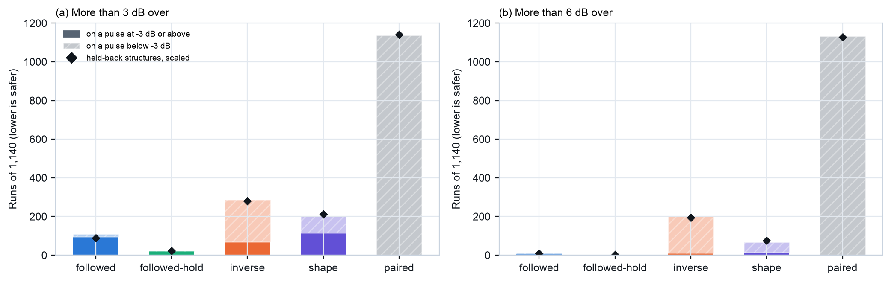
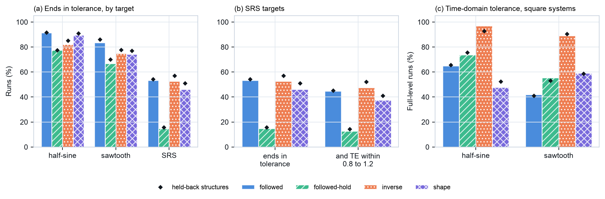
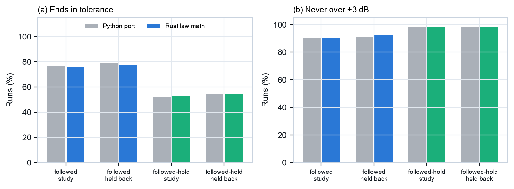

Hertzforge Journal
Five Control Laws for Multi-Shaker Shock Testing: The Laws, Their Build in Hertzforge, and How Each Scores on the MIMO Shock Suite
Research Article
EvidenceSimulator. Closed-loop runs of five control laws on the Open Benchmark Set's MIMO Shock suite, draft 0.2: 380 generated structures on five systems with three targets, 1,140 runs a law, one sequence of measurement noise, each finding tested again on 230 held-back problems by an independent audit. Two laws ran as Hertzforge's Rust law mathematics, three as Python ports shown equal to their Rust laws to rounding (inverse and shape on two development structures, paired on six problems of the suite's first draft), all driven by the suite's own harness and simulator, not Hertzforge's control service.
Abstract
Hertzforge, an open-source structural dynamics suite, has five control laws for shock tests with several shakers: three it ships (a waveform law through the regularized inverse, an SRS law that shapes each control gauge’s target, and a decentralized law that pairs each gauge with one shaker) and two that follow a structure softening with level. This article describes each law, its build in Hertzforge’s Rust law mathematics and how the study ran it, and how each scores on the MIMO Shock suite, draft 0.2, under Method 516.8’s tolerances: 1,140 runs a law on 380 structures, each finding tested again on ten held-back structures. No law is best under every reading. The followed law ends inside the SRS tolerance most often, 76.1 percent of its runs (77.4 percent held back); the followed law with the hold over-tests least, 98.1 percent of its runs never more than 3 dB over, but ends in tolerance in 53.0 percent, mostly because it stops at its probes; the inverse and shape laws end in tolerance in 69.9 percent each. Near full level, on a pulse at -3 dB or above, the shape law put the article more than 3 dB over the full-level target in 116 runs, the followed law in 96, the inverse law in 69 and the followed law with the hold in 19. The inverse law put the article more than 6 dB over in 204 runs, by up to 80.99 dB, 196 of them on pulses below -3 dB, mostly on square systems that soften. On square systems the inverse law meets the classical pulses’ time-domain tolerance in 58.8 percent of its half-sine runs and 45.6 percent of its sawtooth runs, against 39.4 to 55.6 and 30.6 to 31.9 percent for the SRS laws; of the runs that reach full level, in 96.9 and 89.0 percent. The decentralized law ends in tolerance in no run: on these coupled frames each gauge’s own shaker is a small part of what moves it. Everything here is simulation.
Summary
A shock test with several shakers plays a pulse on every shaker at once, measures every control gauge, and corrects the next pulse. The rule that makes the correction is the control law. This article describes five such laws in Hertzforge, how each is built and how the study ran it, and how each scores on the MIMO Shock suite of the Open Benchmark Set, draft 0.2, proposed in a companion article (Cross 2026e). The suite gives every law the same 380 problems on five systems, with SRS, half-sine and sawtooth targets, and reads each run by Method 516.8’s tolerances (U.S. Department of Defense 2019, 2022) several ways. No law is graded as a whole; each result is stated under each reading.
- followed ends inside the SRS tolerance at full level most often, in 76.1 percent of its 1,140 runs (77.4 percent on the held-back structures), and keeps 90.4 percent of its runs within 3 dB of the full-level target; 109 of its runs went more than 3 dB over, 96 of them on a pulse at -3 dB or above.
- followed-hold over-tests least: 98.1 percent of its runs are never more than 3 dB over, and 2 are more than 6 dB over. It ends in tolerance in 53.0 percent, because 428 of its runs stop at its probes before the ladder.
- inverse and shape each end in tolerance in 69.9 percent of their runs. inverse put the article more than 6 dB over the full-level target in 204 runs, by up to 80.99 dB, mostly below full level on square systems that soften; shape in 66, by up to 18.603 dB.
- On SRS targets with the effective duration, the whole of Method 516.8’s SRS tolerance, inverse ends in tolerance slightly more often than followed, 47.6 against 44.7 percent (52.2 against 45.2 percent held back).
- Over-tests near full level. On a pulse at -3 dB or above, shape put the article more than 3 dB over the full-level target in 116 runs, followed in 96, inverse in 69 and followed-hold in 19; more than 6 dB over in 14, 7, 8 and 1.
- On square systems, classical pulses in time: inverse, which corrects the waveform, meets Method 516.8’s time-domain tolerance in 58.8 percent of all its half-sine runs and 45.6 percent of its sawtooth runs, the SRS laws in 39.4 to 55.6 and 30.6 to 31.9 percent. Of the runs that reach full level, inverse meets it in 96.9 and 89.0 percent, the SRS laws in 47.7 to 73.7 and 41.9 to 59.0 percent.
- paired ends in tolerance in no run. Each control gauge’s own shaker is a median 8.1 to 17.5 percent of the sum of the other shakers’ paths to it, so on these coupled frames the pairs work against each other. This follows from the law’s design on these coupled frames, not from its port.
- Implemented. The mathematics of all five laws is on Hertzforge’s main branch. followed and followed-hold were run as the Rust law mathematics, and all five are selectable laws in the application.
1. The Test and the Laws’ Common Frame
A shock test on a shaker does not run continuously. Each pulse starts with the article at rest; the controller plays a drive record on every shaker, measures every control gauge, and between pulses computes the next drive. The test climbs a ladder of levels below full level, so that a wrong drive is found while it is still small, and ends with pulses at full level (Cross 2026c). A law sees the article only through the small-signal frequency response measured before the test and through the pulses it has played.
All five laws work on the same objects. The model is a stack of complex matrices, one per spectral line of the record, mapping drive spectra to control spectra. Drives and errors are held at full level and divided by the pulse’s scale, so a step in level is a rescaling and nothing else. Each law produces the next pulse’s drives from the last pulse’s records, and none uses a clock, a thread, a file or a random number, so the same code runs as a native law and as a law file built for WebAssembly.
2. The Five Laws
2.1 inverse
inverse corrects the waveform. Its first drive is the regularized inverse of the model applied to the reference: per line, with a fraction (1e-3) of the line’s largest singular value, and at the level’s scale . After each pulse, with the drive and the response at full level, the error corrects the drive:
A watchdog keeps the gain per line. It smooths the error energy over 9 lines; on a line whose smoothed energy grew by more than 5 percent since the last pulse it halves the gain, and elsewhere it restores the gain by a factor of 1.2 a pulse, never above 1. This is the standard iterative frequency-domain correction of time waveform replication with a per-line guard. The law never looks at the SRS: if it reproduces the reference waveform, the SRS follows.
2.2 shape
shape corrects the SRS and forms no waveform error at all. It keeps a real, positive gain and a delay per control gauge. After a pulse, with the measured SRS and the target at the SRS’s natural frequencies,
with the ratio taken in decibels, limited to ±6 dB a pulse, and carried to the spectral lines by linear interpolation in log frequency. The next drive is the model’s regularized inverse applied to the shaped references, ; the delays are re-estimated from the measured response by cross-correlation and relaxed by half. The weight depends on the level just played: 0.5 at -12 dB, 0.72 at -9 dB, 0.82 at -6 dB and 0.85 at -3 dB and above. With one shaker this is the single-drive practice that Coleman, Smallwood and Skousen describe for Sandia National Laboratories’ controller: the SRS ratio corrects the magnitude of the drive with a weight below 1.0, from about 50 percent at -12 dB to 80 to 90 percent at full level (Coleman et al. 2016). A correction of the targets of several drives by their SRS ratios with a model measured once is published in a patent application (Zheng et al. 2022). The model is never updated.
2.3 paired
paired is the simplest law and the template a contributor copies. Each control gauge is paired with one shaker; on these systems control gauge with shaker , for as many gauges as there are shakers. The first drive inverts that one path, the pair’s own frequency response. After each pulse, that shaker’s drive spectrum is scaled per line by the ratio of wanted to measured magnitude at its gauge, smoothed over 15 lines, raised to the weight 0.8 and limited to 6 dB a pulse. Nothing else of the model is used, so the law cannot know that a shaker also moves the other gauges. On systems with more control gauges than shakers, the unpaired gauges have no shaker of their own.
2.4 followed
followed is shape on a family of models that follows the structure’s softening. Instead of the single measured model it inverts a family: copies of the model with every resonance lowered by none, half and all of an assumed drop, and the drive is the one least wrong on average over the copies (Cross 2026c). The assumed drop is fitted per octave band from the pulses at each level as the downward stretch of the model that best explains the pulse; the stretch is found by a warp of the identification seen at a complex frequency, with no modal fit. The drop is carried to the next level as a power, at most one, of the response amplitude, times a margin of 1.5, and never more than a ceiling of 12 percent. It only widens, and changes only on a step up in level. Two probes at -40 and -34 dB come before the ladder, so the law sees how the article responds before the climb.
2.5 followed-hold
followed-hold is followed with no ceiling and three additions, each a setting:
- the probe check: before each probe, its SRS is predicted through the identification; when the prediction plus the measured prediction error, carried in amplitude, is more than 3 dB over, the probe is scaled down;
- the power bound: a power measured from two levels’ drops that are both at least 0.5 percent is rounded up by what the fit cannot resolve, half its fine step on each drop, before it is carried up in level;
- the hold: on a repeat pulse at the same level whose every SRS point at every control gauge is within 3 dB of its target, the gains and delays are kept, so the same drive plays again.
The earlier article in this journal that reports ideas for shock control that did not work calls these two laws the followed family with its ceiling and the hold rule, and reports how they were developed (Cross 2026c).
2.6 The Screen, and the Law Left Out
A screen chose which candidates entered the study. It ran six laws on 12 problems: structures 0, 1 and 2 on the 6 x 6 and 6 x 12 systems, at the realistic and strong sizes, three targets and one noise sequence, 36 runs a law. On it followed and followed-hold ended in tolerance in 63.9 and 66.7 percent of their runs and none of their runs was ever more than 3 dB over; inverse and shape ended in tolerance in 47.2 percent each and kept 63.9 and 97.2 percent of their runs within 3 dB; paired ended in tolerance in none and kept none within 3 dB.
The sixth law, srs-design, designs each drive by optimization: per control gauge a gain and a delay at each SRS point, chosen so that the response the identified model predicts from rest meets the SRS target, with a check that declines a pulse predicted more than 3 dB over and a stop after a pulse more than 3 dB over. It hands square systems to followed-hold, so it ran on the 6 x 12 system only, 18 runs. It ended in tolerance in 38.9 percent and kept 88.9 percent within 3 dB. On the realistic size it tied shape; on the strong size it was the worst law but paired; 11 of its 18 runs were stopped by its own over-test rule after a first pulse more than 3 dB over; and its median run took 64.77 s against 2.855 to 10.86 s for the others. It was left out of the study and stays a Python research port.
3. Their Build in Hertzforge, and How the Study Ran Them
3.1 What Is on Hertzforge’s Main Branch
The mathematics of all five laws is in Hertzforge’s crate hertzforge-mimo-shock-law-math: inverse in inverse.rs, shape in shape.rs, paired in paired.rs, and followed and followed-hold in followed.rs, with the softening family in softening.rs and the warp in warp.rs. followed and followed-hold were added by Hertzforge pull request 428, merged to the main branch on 22 November 2026.
The application’s shock control service lets the operator choose among the laws it ships: inverse, shape and paired, and since merge commit 5f5b5d8d5fddcfa891dfdd519c6c9044f301b644 (Hertzforge#462) followed and followed-hold. The selectable followed and followed-hold call the same law mathematics the study ran.
3.2 How the Study Ran Them
The study did not run Hertzforge’s control service or its ladder. It ran every law through the suite’s own harness, the Python program that plays the ladder of the suite’s specification and the suite’s simulator (Cross 2026e):
- followed and followed-hold ran as the Rust law mathematics, built into a library that the harness calls closed loop. The library is the crate at the commit the study ran on, with a small bridge of its own; its SHA-256 hash is recorded in the results record.
- inverse, shape and paired ran as Python ports of their Rust laws. Section 3.3 shows that each port was shown equal to its Rust law to rounding, and on what.
So the results are of the law mathematics that is on the main branch, run by the suite’s harness. Hertzforge’s control service adds what a controller around a law adds: its own ladder, its own checks before a pulse and the operator’s choices. None of that was tested here.
3.3 Parity of the Ports With the Rust Laws
inverse and shape. Each port was compared with its Rust law closed loop, through a bridge to the Rust code built from an earlier Hertzforge commit, 50ee56ad (main’s shape.rs has since gained a hold, off by default, which was not compared), on two development structures of the earlier study, linear and moderate (a structure whose modes fall by up to 3 percent with level) (Cross 2026c), with the same identification and ladder and no measurement noise. The largest relative difference in drive was 2.2e-12 and the largest difference in a pulse’s over-test 1.5e-12 dB: equal to rounding.
paired. The port was compared with the Rust law on six problems of the suite’s first draft, the 6 x 6 and 6 x 12 systems at each size, through the Rust crate’s own law. The largest relative difference in drive was 1.5e-9.
followed: the port’s own warp choices. The Python port of followed is a restatement of the warp, the family and the fit in NumPy. On moderate it differed from the Rust law by 0.0811 in relative drive and 0.2006 dB in over-test; on linear, where there is no drop to fit, the two were equal to rounding (6.4e-14). Read side by side, the two differ in the warp’s choices, not in the method: the port warps on 19 knots from 40 to 2,560 Hz and the Rust law on 36 knots from 40 to 2,280.7 Hz; the port’s warped band is wider; and the port fits a delay on each row (up to 0.4688 ms) where the Rust law fits none. With only the port’s warp changed to the Rust choices, the port equals the Rust law to 3.5e-10 in drive and 2.9e-10 dB in over-test on moderate. Changed one at a time, the knots alone leave 0.0123 and 0.0083 dB, the warped band alone 0.0800 and 0.1971 dB, the delay alone 0.0390 and 0.2060 dB. The difference is the warp choices, all of it.
followed through the closed-loop library. The Rust followed, called through the library the study used, equals the bridge’s followed with a largest drive difference of 0 on moderate, on linear and on one suite problem. followed-hold equals its Python port with the port’s warp changed to the Rust choices, to 3.5e-10 in drive and 2.9e-10 dB on moderate, with the probe check not firing in that comparison (Section 6).
The study first ran followed and followed-hold as the ports. When the comparison above found that the port’s warp differs, the two laws were run again as the Rust law mathematics. Before the study, the rule was that a Rust build had to reproduce every port run, the same end and pulse count with every pulse’s over-test within 0.05 dB. It does not: the warp choices change single runs (Section 5.7). The results here are the Rust laws’, which are the laws as implemented.
4. The Study
The study ran every law on every problem of the MIMO Shock suite, draft 0.2 (Cross 2026e, 2026b), the Random study’s matrix (Cross 2026d): five systems (3 x 12, 6 x 12 and 12 x 24 with more control gauges than shakers; 6 x 6 and 12 x 12 square), the linear structure and the realistic and strong sizes of change with level on structures 0 to 9, 12 to 15, 17, 19 and 32 to 35, and the softening-only and hardening-only variants on the 6 x 12 and 6 x 6 systems on structures 0 to 9. That is 380 structures with three targets each, SRS, an 11 ms half-sine and an 11 ms terminal-peak sawtooth, 1,140 runs a law and 5,700 runs in all. Every law gets the same ideal small-signal identification and measurement noise of 1e-3 of the reference’s RMS from one noise sequence (11), and runs at its defaults. Two problems, structure 8 and held-back structure 74 on the 6 x 6 system at the strong size with softening only, were made again after a fix to the suite’s full-level sizing, and every run on them was run again; every number here is from the corrected problems (Cross 2026e).
An independent audit ran the same matrix on ten structures held back from the study (70 to 79): 230 problems, 690 runs a law, 3,450 in all, with the same code and settings (Cross 2026e).
The readings are the suite’s (Cross 2026e). Strict is the seven run criteria of the earlier study (Cross 2026c). Ends in tolerance is the last full-level pulse inside Method 516.8’s SRS point tolerance at every control gauge: -1.5/+3 dB on at least 90 percent of the twelfth-octave points from 10 to 2000 Hz, every point within -3/+6 dB. Ends with TE adds the effective duration within 0.8 to 1.2 of the target’s, by the standard’s Annex A, for SRS targets: the whole of Method 516.8’s SRS tolerance. Ends within -3/+3 dB holds every point within -3/+3 dB. Level is the mean SRS error within 1.5 dB and no point over +6 dB. Exposure is the safety reading: no pulse or probe ever more than 3 dB over the full-level target. Time domain is Method 516.8’s tolerance of a classical pulse in time.
The Rust runs of followed and followed-hold took 54 min 43 s for the study and 43 min 55 s for the audit; the runs with the effective duration by Annex A, of every SRS target, were rerun with every other reading unchanged (Cross 2026e).
5. Results
5.1 How Often Each Law Works
Figure 1 gives each law’s share of runs under each reading. On the study’s structures followed ends in tolerance in 76.1 percent of its runs, inverse and shape in 69.9 percent each, followed-hold in 53.0 percent and paired in none. The order holds on the held-back structures: 77.4, 73.3, 72.9, 54.3 percent and 0. Under the strict criteria the order is the same, lower: 62.1, 59.2, 59.7, 49.4 and 0 percent (study). The Level reading gives nearly the shares of ending in tolerance.
The safety reading orders the laws differently. followed-hold keeps 98.1 percent of its runs within 3 dB of the full-level target, followed 90.4 percent, shape 82.4 percent, inverse 74.8 percent and paired 0.4 percent. The law that ends in tolerance least often of the four laws that end in tolerance in any run is the one that over-tests least, and the law that ends in tolerance most often keeps 90.4 percent of its runs within 3 dB and has 109 runs more than 3 dB over.
The -3/+3 dB reading lowers every law’s share and lowers shape’s most: followed 69.1 percent, inverse 65.5 percent, shape 62.1 percent, followed-hold 51.7 percent (study).
![Grouped bars, six groups along the horizontal axis (strict criteria; ends in tolerance; ends in tolerance with TE on SRS; ends within minus 3 to plus 3 dB; Level reading; never over plus 3 dB), five bars per group for followed, followed-hold, inverse, shape and paired, share from 0 to 100 percent on the vertical axis, with black diamonds for the held-back structures. Strict: 62, 49, 59, 60 percent, 0. Ends in tolerance: 76, 53, 70, 70 percent, 0. With TE: 73, 52, 68, 67 percent, 0. Within minus 3 to plus 3: 69, 52, 66, 62 percent, 0. Level: 76, 53, 70, 70 percent, 0. Never over plus 3 dB: 90, 98, 75, 82 percent, near 0. The diamonds lie on or a little above the bars.](figures/fig1_readings.png)
This figure: Data (CSV) Code Picture (PNG)
5.2 Cell by Cell
Figure 2 gives the share ending in tolerance in every cell of the matrix for the four laws that end in tolerance in any run. On the linear structure every one of them ends in tolerance in every run on most systems, except followed-hold, which stops at its probes in many runs even there (48.3 percent on the 3 x 12 system).
Where the structure changes with level, the laws separate by system. On the square 6 x 6 system at the realistic size followed ends in tolerance in 61.7 percent of its runs, followed-hold 40.0 percent, shape 38.3 percent and inverse 35.0 percent; at the strong size 28.3, 13.3, 21.7 and 0 percent; with softening only at the strong size 33.3, 20.0, 23.3 percent and 0. On the 12 x 12 system at the strong size followed reaches 46.7 percent and inverse 1.7 percent. inverse ends in tolerance in no run on the strong 6 x 6 cells, and on the same cells keeps only 5.0 percent (both effects) and 0 (softening only) of its runs within 3 dB.
On systems with more control gauges than shakers inverse ends in tolerance as often as followed or more often in 9 of the 10 cells that change with level: ahead in 5, by 2 to 5 runs of 30 or 60 (for example 100 against 95.0 percent on the 6 x 12 system at the realistic size, 96.7 against 91.7 percent on the 12 x 24 system at the realistic size and 38.3 against 30.0 percent on the 3 x 12 system at the strong size), and tied in 4. followed is ahead on the 3 x 12 system at the realistic size, 91.7 against 86.7 percent. These differences are a few runs on one noise sequence; the held-back structures agree in direction.
With hardening only, every law ends close to its linear share: on the 6 x 6 system at the strong size followed 86.7 percent, followed-hold 70.0 percent, inverse 90.0 percent and shape 86.7 percent. What separates the laws is the softening.
![Five panels of grouped bars, one per system, four bars per cell for followed, followed-hold, inverse and shape. 3 x 12: linear 100, 48, 100, 100 percent; realistic 92, 37, 87, 90 percent; strong 30, 7, 38, 30 percent. 12 x 24: linear 100, 72, 100, 100 percent; realistic 92, 70, 97, 85 percent; strong 68, 60, 68, 67 percent. 12 x 12: linear 100, 93, 100, 100 percent; realistic 68, 60, 57, 53 percent; strong 47, 35, 2, 28 percent. 6 x 12, seven cells: linear 100, 73, 100, 100 percent; realistic 95, 67, 100, 82 percent; strong 55, 32, 60, 58 percent; realistic softening only 93, 70, 100, 77 percent; realistic hardening only 100, 77, 100, 100 percent; strong softening only 67, 40, 67, 57 percent; strong hardening only 97, 77, 97, 97 percent. 6 x 6, seven cells: linear 92, 72, 92, 92 percent; realistic 62, 40, 35, 38 percent; strong 28, 13, 0, 22 percent; realistic softening only 67, 33, 37, 37 percent; realistic hardening only 90, 70, 97, 90 percent; strong softening only 33, 20, 0, 23 percent; strong hardening only 87, 70, 90, 87 percent.](figures/fig2_cells.png)
This figure: Data (CSV) Code Picture (PNG)
5.3 Safety
An over-test is the article driven harder than the full-level target. The counts below are of runs in which any pulse or probe put any control gauge more than 3 dB, or more than 6 dB, over the full-level target (Figure 3).
- inverse over-tested by more than 6 dB in 204 of its 1,140 runs on the study’s structures, and by more than 3 dB in 287. In 196 of the 204 the pulse was below -3 dB, so that pulse was more than 9 dB over its own level’s target. Of the runs over 3 dB, the median largest exposure was 10.891 dB and the largest 80.99 dB. On the held-back structures: 117 runs over 6 dB, the largest 97.496 dB. The over-tests are concentrated on the square systems where the structure softens (Section 5.2). The law corrects the waveform through the small-signal inverse of a structure that has since softened, and its watchdog did not stop these runs; where in the loop each went wrong was not isolated.
- shape over-tested by more than 6 dB in 66 runs and by more than 3 dB in 201, by up to 18.603 dB; on the held-back structures 45 and 128, up to 18.124 dB.
- followed over-tested by more than 6 dB in 14 runs and by more than 3 dB in 109, by up to 11.153 dB; held back, 6 and 53, up to 9.509 dB.
- followed-hold over-tested by more than 6 dB in 2 runs and by more than 3 dB in 22, by up to 7.308 dB; held back, 2 and 13, up to 9.509 dB.
- paired over-tested by more than 6 dB in 1,131 of its 1,140 runs, with a median largest exposure of 25.761 dB and a largest of 57.901 dB; held back, 683 of 690, up to 62.08 dB. Every one of these was on a pulse below -3 dB (Section 5.6).
The SRS laws’ over-tests are mostly on pulses near full level: 116 of shape’s 201 runs over 3 dB and 96 of followed’s 109 were on a pulse at -3 dB or above. inverse’s more-than-6 dB over-tests are mostly far below it, 196 of 204, but 69 of its runs were more than 3 dB over on a pulse at -3 dB or above, more than followed-hold’s 22 runs over 3 dB in all.

This figure: Data (CSV) Code Picture (PNG)

5.4 How the Misses Miss
A run that does not end in tolerance either reached full level and missed there, or stopped below full level because six pulses at one level failed to pass. Figure 4 shows which. For each of the four laws that end in tolerance in any run, almost every miss is a run that stopped short:
- followed: 867 runs end in tolerance; 266 stopped below full level, 80 of them at a probe; 7 missed at full level, by a median 1.31 dB beyond the tolerance and at most 7.19 dB.
- followed-hold: 604 end in tolerance; 534 stopped below full level, 428 of them at a probe; 2 missed at full level, by at most 1.31 dB. Why each of the 428 stopped at a probe was not broken down. The median highest level its stopped runs reached is -34 dB, the second probe.
- inverse: 797 end in tolerance; 336 stopped below full level; 7 missed at full level, by at most 3.55 dB.
- shape: 797 end in tolerance; 329 stopped below full level; 14 missed at full level, by a median 0.695 dB and at most 4.93 dB.
- paired: every run stopped below full level, the median at -12 dB, the first ladder level.
The median highest level of the stopped runs is -12 dB for followed, inverse and shape: most stop at the first ladder level. A run that stops short has not over-tested the article by that fact; it has not tested it. The held-back structures show the same pattern (Figure 4, lower bars).
![Ten horizontal stacked bars, two per law, share of runs from 0 to 100 percent. followed study: 76 percent in tolerance, about 1 percent at full level outside, 16 percent stopped below full level, 7 percent at a probe; held back about the same. followed-hold study: 53 percent in tolerance, 9 percent stopped below full level, 38 percent at a probe; held back about the same. inverse study: 70 percent in tolerance, 1 percent at full level outside, 29 percent stopped below full level. shape study: 70 percent in tolerance, 1 percent at full level outside, 29 percent stopped below full level. paired: the whole bar stopped below full level.](figures/fig4_misses.png)
This figure: Data (CSV) Code Picture (PNG)
5.5 By Target: SRS, Effective Duration and the Classical Pulses in Time
Ending in tolerance by target (Figure 5 a). All four laws do best on half-sines and worst on SRS targets. On half-sines followed ends in tolerance in 91.3 percent of its runs, shape 89.5 percent, inverse 82.1 percent and followed-hold 77.4 percent; on sawtooths 83.4, 74.2, 75.0 and 66.8 percent; on SRS targets 53.4, 46.1, 52.6 and 14.7 percent. followed-hold’s low share on SRS targets is its stops at the probes.
The effective duration (Figure 5 b). For SRS targets, Method 516.8’s tolerance includes the effective duration. With it, inverse ends in tolerance in 47.6 percent of its SRS runs, followed 44.7 percent, shape 37.6 percent and followed-hold 12.6 percent (held back 52.2, 45.2, 40.9 and 14.3 percent). Of their runs that reached full level on SRS targets, inverse kept its TE within tolerance in 90.3 percent, followed 83.7 percent, shape 79.2 percent and followed-hold 85.7 percent. One reading, not tested: a law that corrects the waveform keeps the waveform’s duration, while a law that corrects only the SRS can meet the SRS with a pulse that rings longer or shorter. Of the full-level misses of TE, the median ratio to the target’s TE at the furthest control gauge is 1.27 for followed and 1.22 for inverse; inverse’s largest is 14.66.
The classical pulses in time (Figure 5 c). Method 516.8 judges a classical pulse in time. The suite’s companion article shows that on systems with more control gauges than shakers the projected sawtooth target itself cannot meet the time-domain tolerance, so the reading is reported here for the square systems only (Cross 2026e). There, of the runs with a last full-level pulse, inverse meets the whole time-domain tolerance at every control gauge in 96.9 percent of its half-sine runs and 89.0 percent of its sawtooth runs; followed-hold 73.7 and 55.4 percent; followed 65.0 and 41.9 percent; shape 47.7 and 59.0 percent. What the SRS laws miss is the waveform: followed’s half-sines are inside the ±20 percent band around the peak in 67.2 percent of these runs and shape’s in 64.4 percent, and shape’s compensation pulses inside their band in 49.2 percent, against 100 and 96.9 percent for inverse. The SRS laws were built to meet an SRS, and they do; the time history that meets it is not the classical pulse’s.

This figure: law_targets.csv law_te_srs.csv law_classical_time.csv Code Picture (PNG)

5.6 paired on Coupled Frames
paired ends in tolerance in no run, and over-tests in nearly every one. This follows from the law’s design on these coupled frames, not from its port. The port equals the Rust law (Section 3.3). On six problems of the suite, one of each system class and size, the pair’s own path is a median 0.081 to 0.175 of the sum of the other shakers’ paths to the same gauge, so a gauge is moved mostly by shakers the law does not account for. In the frame’s own linear model, the law’s first drive misses each control gauge’s RMS by 10.2 to 50.0 dB before any pulse is played, and on the 6 x 12 system six of the twelve control gauges have no shaker of their own. The law leaves coupling out by design, and on these strongly coupled frames it ended in tolerance in no run. On a system whose shakers each move mostly their own gauge it could; none is in the suite.
5.7 The Rust Laws Against the Python Ports
Figure 6 compares the two runs of followed and followed-hold. Overall the laws moved little. On the study’s structures followed ends in tolerance in 76.4 percent of its runs as the port and 76.1 percent as the Rust law, and is never more than 3 dB over in 90.2 and 90.4 percent; followed-hold in 52.2 and 53.0, and 98.2 and 98.1 percent. On the held-back structures followed goes from 79.0 to 77.4 percent and from 90.9 to 92.3 percent; followed-hold from 54.8 to 54.3 percent and from 98.3 to 98.1 percent.
Single runs moved more. Of followed’s 1,140 study runs, 14 went from ending in tolerance to missing and 10 the other way; of followed-hold’s, 12 and 21. The largest exposure is unchanged in 481 and 623 runs and moved by a median of 0.016 and 0 dB, but by as much as +18.564 and -29.752 dB in single followed runs and +17.959 and -23.937 dB in single followed-hold runs. The largest change in a cell’s share ending in tolerance is 10 percentage points. A small change in the warp’s choices moves the fitted drop, and on a structure near the edge of what the law can follow, a different drop is a different run. The shares are stable; single runs are not.

This figure: Data (CSV) Code Picture (PNG)

5.8 The Audit
The held-back structures keep every finding above. Of the comparisons between two laws in one cell, 214 of 228 kept their sign on the held-back structures, and all 153 the study was large enough to decide; of the comparisons of the effective-duration share, 117 of 138 (Cross 2026e).
6. What Was Not Tested
- Hertzforge’s control service. The laws ran in the suite’s harness and ladder, not in the application. The application’s own checks, ladder and operator settings were not run with any of the five laws.
- followed-hold’s probe check firing, Rust against port. The comparison of Section 3.3 is on
moderate, where the probe check did not scale a probe. The study’s runs include it as built. - Noise. One sequence of measurement noise at one level, and an ideal identification. Real tests identify from a noisy buzz.
- Settings. Every law ran at its defaults. No law was tuned on the suite.
- Hardware. Simulation only: no converters, amplifiers or shakers, no loopback.
- Held-out gauges and stress. The suite reads the control gauges only; what each law does at gauges it does not control, or to stress in the article, was not read.
- Pulse shapes, durations and targets with phase between gauges. One SRS shape, one classical duration, targets in phase at every gauge.
- srs-design was screened on 18 runs, not studied.
Data Availability
The problems are the MIMO Shock suite, draft 0.2, published as a data set, DOI 10.5281/zenodo.24526368 (Cross 2026b). The study’s and the audit’s run records, including the Rust and the port runs of followed and followed-hold, the effective-duration reruns, the screen, the parity records and the 230 held-back problems, are published as a results record, DOI 10.5281/zenodo.24526370 (Cross 2026a). The data behind every figure and the code that draws it are with this article, in data/ and code/; the code is under the MIT license and the data under CC BY 4.0.
Contribution Statement
Kevin Cross is the sole author. He chose the laws, directed their design and their implementation in Hertzforge, the screen, the study and its audit, and their analysis.
How This Was Made
The text, the figures, the code that draws them, the laws’ Rust and Python code, and the study’s runner and analysis scripts were written with Claude Code, an AI coding assistant running Anthropic’s Claude Opus models, under Kevin Cross’s direction. The author is responsible for every word, number and line of code.
Acknowledgments
The SRS-ratio correction with a weight below 1.0 that rises with level is the published practice of R. Coleman, D. Smallwood and T. Skousen for the controller of Sandia National Laboratories, credited here to Sandia National Laboratories. The correction of several drives’ targets by SRS ratio with a model measured once is published by R. Zheng, H. Chen and X. Wei of the Nanjing University of Aeronautics and Astronautics. The tolerances are those of MIL-STD-810H Method 516.8, a standard of the U.S. Department of Defense. The computations use NumPy (Harris et al. 2020) and the figures Matplotlib (Hunter 2007).
References
Implemented In
The five laws’ mathematics is in Hertzforge, https://github.com/Hertzforge/Hertzforge, crate crates/hertzforge-mimo-shock-law-math. followed and followed-hold (src/followed.rs) were merged to the main branch as pull request 428, merge commit 6d6e1758f68130dd52f645c75390d369926c7f2a, whose parents are d201caec76d55fd7096684f675a2e42070153eb3 (main) and 5420d5704d6812d0f017463839f7f025151c80a7 (the pull request’s head). The study ran on commit 25898c9132e5d1f15d6c3cbf4afdffe77ed63afc (parent 802bad1dc82b6b76cff64746acc62a28d00ece4b); between it and the pull request’s head the crate’s followed.rs, shape.rs, softening.rs and warp.rs are identical, and the only change in the crate is a four-line rewrite in provider.rs taken from main, and the merge commit changes nothing further. inverse, shape and paired are in inverse.rs, shape.rs and paired.rs of the same crate.
The application’s shock control service is the crate crates/hertzforge-mimo-shock. On the main branch its selectable laws are inverse, shape and paired, and followed and followed-hold since merge commit 5f5b5d8d5fddcfa891dfdd519c6c9044f301b644 (Hertzforge#462) (builtin.rs). The suite’s harness, the Python ports and the bridge to the Rust law mathematics are in the suite’s code (Cross 2026b), released at commit 045907c8f77ef8345997a12606001b78e5d88fe4 of the benchmarks repository. The runs were made with earlier states of that code, each identified by the SHA-256 recorded in every run file: d6a5989e31be00c0f8c8039aa519f1152d0a11dc695847cbb7c40254ae6ae95d for the Rust runs, eb25ed5f3ff23c5b87908dc6dd51f32e4747a97df90f44052b3dd86968860ec8 for the effective-duration reruns and 59af1aecf67e45db7c13d0d68656d286fdacf7f61df83760b82c3e0ee6277db0 for the runs on the two problems made again. The released code, 045907c, gives the same results as those states on every recorded field except the code hash, the library’s identity and timing (112 runs compared); its library, built from the main branch at 6d6e1758, has the SHA-256 c416aefb2e1bdf4926100fa48c7ba623e2fe72e6af717b774aa0958f28f74b05. The library the runs called has the SHA-256 2f543264daa77d39c90d791f47819f9a249a62c2d5c16dbad31418c7fe61be6c; for the runs on the two problems made again it was built from the pull request’s head, 5420d570, whose law mathematics equal the main branch’s, with the SHA-256 f31357a483a4bc449edf7f61f06000d2f1cbd302f3b85ed4172e9971167a1e18. The problems are the suite’s (Cross 2026e).
Version History
Version 1, 2026-11-25. DOI 10.5281/zenodo.24537418. First published.
Reviews
Review is public and signed, and stays open after publication.
No invited review had been posted when this version was published.
Reviews posted since are listed at https://hertzforge.com/journal/2026-014/.
Copyright 2026 Kevin Cross. Text, figures and data CC BY 4.0; code MIT.
Methods are published for research. Anyone who applies one to a test is responsible for protecting the equipment and the article under test.